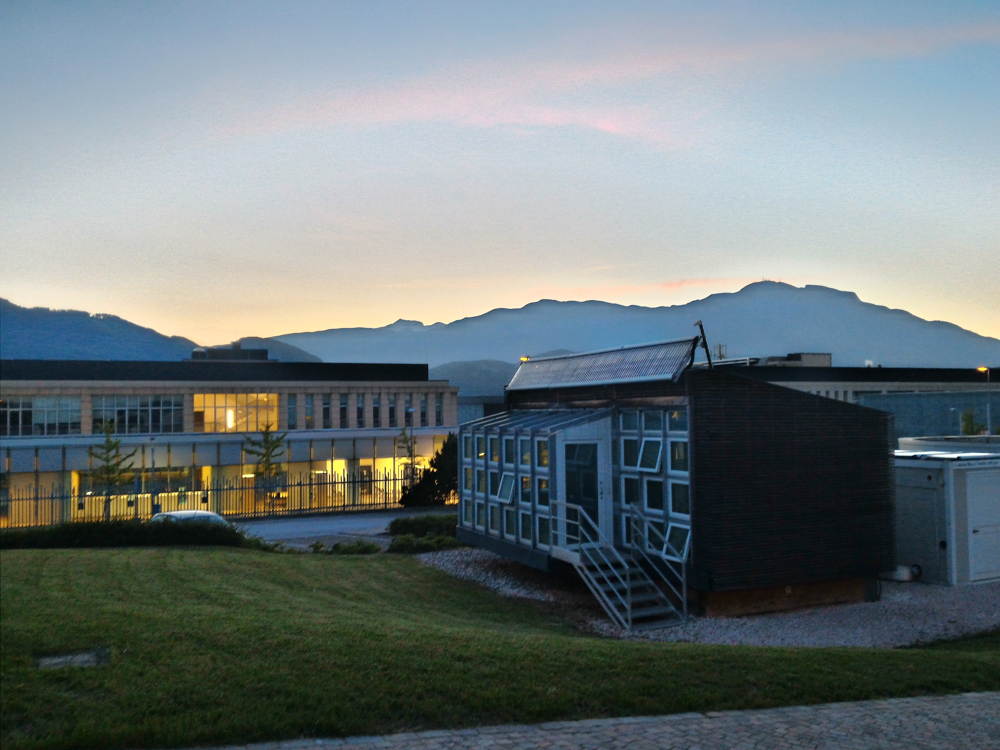

Alessio is an AI/ML researcher with 10 years' experience and expertise in computer vision and deep learning. Alessio contributed computer vision and deep learning methods and audio-visual datasets for human-robot collaborations, decentralised vision methods for collaborative 3D reconstruction and navigation, and benchmarks of graph neural networks for visual privacy and explainability. Alessio obtained the Ph.D. in Electronic Engineering from Queen Mary University of London, UK, in September 2020, Alessio obtained the Master Degree in Telecommunications Engineering and the Bachelor Degree in Electronics and Telecommunication Engineering from the University of Trento in March 2015 and February 2012, respectively.
To engage the community on human-to-robot handover of unknown containers, he has organised and run 4 challenges on audio-visual prediction of object physical properties for human-robot collaborations (2020-2022), 3 live human-to-robot handover competitions (2024-2026), requiring real-time manipulation under real-world conditions, and 5 workshops at international venues. These events attracted interest from worldwide research labs, both in academia and industry. For the live competitions, this year the number of participating teams has quadrupled relative to the previous two editions, showing evidence of sustained community engagement beyond project timeline.
Alessio has been serving as a Guest Editor for Special Issues in IEEE Robotics & Automation Practice and Autonomous Robots. He has served as a reviewer for international conferences and journals, including IEEE Transactions on Pattern Analysis and Machine Intelligence (TPAMI), IEEE Transactions on Multimedia (TMM), IEEE Robotics and Automation Letters (RA-L), International Conference on Computer Vision and Pattern Recognition (CVPR), European Conference on Computer Vision (ECCV), IEEE International Conference on Acoustic, Speech, and Signal Processing (ICASSP). Alessio received the Outstanding Reviewer award at 5 international conferences: ECCV 2024, CVPR 2024, IEEE ICASSP 2022-2023, and IEEE ICIP 2020.
Alessio was an IEEE Member and a member of the IEEE Signal Processing Society. He is a member of the Computer Vision Foundation and the British Machine Vision Foundation.
Machine Learning Engineer for SRUK
Alessio was contracted as a Machine Learning Engineer for Samsung Research UK via microTech Global Ltd (Oct 2025- Dec 2025) to work on Membership Inference Attacks for data privacy risk assessment (AI privacy, AI security). He built a production-oriented client-server ML system to enable model serving, inference, and adversarial attacks.
PostDoc Researcher at QMUL
Alessio was a Researcher with the Centre for Intelligent Sensing and the School of Electronic Engineerging and Computer Science at Queen Mary University of London (QMUL), UK, from October 2019 until October 2025. As a postdoc, he managed 2 interdisciplinary and international projects: GraphNEx from January 2023 until December 2024, and CORSMAL from October 2019 until December 2022. He researched explainability and machine learning models based on Graph Neural Networks for privacy protection in multimedia data (images, videos, and audio-visual data). He also researched novel, robust, deployable multi-modal models for human-to-robot handovers of unknown containers with unknown contents. To promote Open Science, he publicly released open-source code, data, and toolkits associated with the research publications. These efforts resulted in the project CORSMAL achieving the CHIST-ERA Open Science Success Story recognition in 2022, and the artefacts associated with my article “Learning Privacy from Visual Entities” being awarded the Functional reproducibility badge.
PhD at QMUL/FBK

His Ph.D. was funded from 2015 to 2019 under the Audio-Visual Intelligent Sensing Project, a joint collaboration between QMUL and Fondazione Bruno Kessler (FBK), Italy. Alessio investigated the problem of matching local spatio-temporal features between moving monocular cameras under the supervision of Prof. Andrea Cavallaro (QMUL) and Dr. Oswald Lanz (FBK). He also collaborated within the project to investigate the problem of audio-visual tracking in 3D of a talking person from a co-located camera with a circular microphone array, and the annotation and calibration of the audio-visual recording system for a novel dataset (CAV3D) in conjuction with the tracking task.
Research grant at MMLAB, UNITN
From March to September 2015, Alessio collaborated with Dr. Nicola Conci at the MMLAB (UNITN) Alessio developed a client-server application within the LifeGate project. He also collected datasets for the Synchronization of Multi-User Event Media task.
Research internship at INRIA Grenoble Rhone-Alpes
Alessio took a 6-months internship with the PERCEPTION team at INRIA Grenoble Rhone-Alpes (March-August 2014) for his master's thesis. Supervised by Dr. Radu Horaud, Xavier-Alameda Pineda and Sileye Ba, he co-designed and developed a probabilistic graphical model for tracking multiple people in a video.
Bachelor and Master at UNITN
Alessio obtained the Bachelor degree in Electronic and Telecommunications Engineering (2008-2012) and the Master degree (2-years) in Telecommunications Engineering (2012-2015) at University of Trento (UNITN), Italy. From March to September 2015, before starting the Ph.D., Alessio also collaborated with MMLAB (UNITN) for the development of a client-server application within the LifeGate project and for the collection and annotation of datasets for the Synchronization of Multi-User Event Media task.
Hobbies - when I don't do research
Alessio enjoys playing chess and board games, reading books on a variety of topics from philosophy to self-development, and dancing (my main passion). He likes networking at events that connect innovators, researchers, and investors to engage with fresh ideas and different perspectives. He was selected together with an NLP researcher and a CS undergraduate to participate in the Idiap Create Challenge 2024 (acceptance rate: 20%) and we developed an LLM-based prototype for human-AI teaming in misinformation detection, from concept to working demo in 9 days.